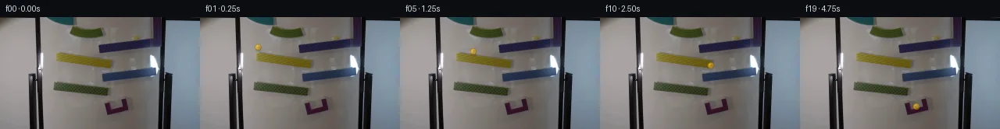

![首帧]()

Round 00
2026-11-05T02:59:49.348498+00:00像素候选变化代码 +224/−0inspection 更新
pixels f9abc5363c956dce · code 4a7bc896efc84924
查看本轮 generate.py 真实 diff
--- previous/generate.py
+++ current/generate.py
@@ -0,0 +1,224 @@
+#!/usr/bin/env python3
+"""Generate a fixed-camera marble-run continuation from the supplied first frame."""
+
+from pathlib import Path
+import math
+
+import numpy as np
+from PIL import Image, ImageDraw, ImageFilter, ImageFont
+
+from artifact_io import save
+
+
+ROOT = Path(__file__).resolve().parent
+W, H = 256, 144
+SS = 4
+RESAMPLE = Image.Resampling.LANCZOS
+
+
+# Hand-measured centers. Frame 0 intentionally contains no overlay. The yellow
+# track carries the long readable motion; subsequent short transfers follow the
+# exposed overlapping ends of the blue and green pieces into the purple catch.
+POSITIONS = [
+ None,
+ (74.5, 39.0),
+ (76.5, 41.2),
+ (80.5, 42.1),
+ (86.5, 43.1),
+ (94.0, 44.5),
+ (103.0, 46.0),
+ (113.0, 47.8),
+ (125.0, 49.8),
+ (138.5, 52.2),
+ (142.0, 62.5), # airborne toward blue
+ (143.0, 69.3),
+ (140.5, 69.8),
+ (137.0, 70.5),
+ (133.2, 71.2),
+ (132.5, 83.2), # airborne toward green
+ (132.5, 90.5),
+ (136.0, 92.0),
+ (142.5, 104.0), # off the green tip toward the catch
+ (149.0, 115.2),
+]
+
+AIRBORNE = {10, 15, 18}
+
+
+def alpha_over(base: Image.Image, overlay: Image.Image) -> Image.Image:
+ """Composite an RGBA layer while retaining the original RGB dimensions."""
+ return Image.alpha_composite(base.convert("RGBA"), overlay).convert("RGB")
+
+
+def add_shadow(layer: Image.Image, frame_i: int, cx: float, cy: float) -> None:
+ """Paint a small, optically soft ramp/contact shadow."""
+ scale = SS
+ shadow = Image.new("RGBA", (W * scale, H * scale), (0, 0, 0, 0))
+ draw = ImageDraw.Draw(shadow, "RGBA")
+
+ if frame_i == 10:
+ sx, sy, opacity, rx, ry = 142.0, 72.0, 26, 4.2, 1.5
+ elif frame_i == 15:
+ sx, sy, opacity, rx, ry = 132.5, 94.0, 23, 4.0, 1.4
+ elif frame_i == 18:
+ sx, sy, opacity, rx, ry = 148.0, 120.0, 23, 3.8, 1.5
+ else:
+ sx, sy, opacity, rx, ry = cx + 0.7, cy + 4.0, 52, 4.1, 1.25
+
+ box = ((sx - rx) * scale, (sy - ry) * scale,
+ (sx + rx) * scale, (sy + ry) * scale)
+ draw.ellipse(box, fill=(40, 29, 10, opacity))
+ shadow = shadow.filter(ImageFilter.GaussianBlur(0.75 * scale))
+ layer.alpha_composite(shadow)
+
+
+def add_motion_streak(layer: Image.Image, frame_i: int) -> None:
+ """Add a very restrained translucent streak only on fast free-fall frames."""
+ if frame_i not in AIRBORNE:
+ return
+ prev = POSITIONS[frame_i - 1]
+ curr = POSITIONS[frame_i]
+ assert prev is not None and curr is not None
+ scale = SS
+ streak = Image.new("RGBA", (W * scale, H * scale), (0, 0, 0, 0))
+ d = ImageDraw.Draw(streak, "RGBA")
+ # The tail occupies only the last portion of the inter-frame path, preventing
+ # a low-frame-rate duplicate-ball look.
+ ax = curr[0] * 0.68 + prev[0] * 0.32
… diff truncated; 137 more lines …